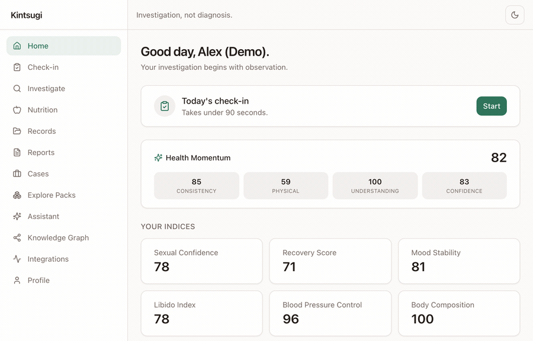

Become the primary investigator of your own health.
Investigation, not diagnosis.
Symptoms surface between rushed appointments. No single doctor sees the whole picture.
Lab PDFs in email and three portals; no longitudinal view across years or sources.
Most trackers pile on numbers and alerts — fueling midnight symptom-googling, not clarity.
Sexual, mental, and reproductive health are hard to articulate in a 10-minute visit.
The Japanese art of repairing pottery with gold treats the cracks as part of the story — not something to hide. Your health is the same: the dips, the unexplained symptoms, the scattered results are the evidence that explains how you got here.
Kintsugi turns a fragmented history into something whole, legible, and yours.
A sub-90-second daily check-in plus timeline and memory build a longitudinal record.
A deterministic Detective surfaces trends & correlations as questions — never verdicts.
Turn evidence into a doctor-ready case so 10 minutes with a specialist actually count.
Modular Investigation Packs unify sleep, sexual & women's health, labs, longevity and more — all behind a safety guardrail layer.
Check-in, timeline, vault, labs & wearables via a vendor-neutral metric layer.
Detective + experiments find patterns, correlations & regime changes — explainably.
Health Momentum, knowledge graph, and the AI Historian make it make sense.
Multi-cadence reports & a specialist-tailored case to bring to the appointment.
The product compounds: the longer you use it, the more valuable it becomes.

Symptoms, labs, goals & conditions → suspected nutrient factors with a confidence score.
Every suggestion opens a “Why am I being told this?” chain: gap → food → mechanism → evidence.
A curated knowledge graph graded A–E — never a black-box claim.
Allergy, medication-interaction & condition checks (e.g. CKD/potassium) with safer alternatives.
Fully deterministic and guardrailed — nutrients-first (“foods that provide calcium include…”), never “treat / cure / dose.” Personalized by diet, region & culture (global staples and West Bengal foods), with outcomes tracked against your own check-ins and labs.
| Typical tracking / health apps | Kintsugi Health OS | |
|---|---|---|
| Framing | Scores, streaks, alerts | Investigation — patterns as questions |
| Trust | Black-box AI that can hallucinate | Deterministic analysis + guardrail layer |
| Tone | Often anxiety-amplifying | Anti-anxiety by design |
| Ownership | Vendor-locked / data sold | Patient-owned: export + delete, always |
| Scope | One domain | Modular packs across many domains |
| Output | A dashboard to stare at | A doctor-ready case |
Sexual health & sleep, tracked without shame; a urologist-ready case.
Reconstruct years of symptoms; see what correlates with fatigue.
A calm, non-alarmist read — findings as questions to investigate.
PCOS, fertility & menopause with extra protection for sensitive data.
Rigorous N-of-1 experiments across wearables, labs & lifestyle.
Win the high-intent, under-served investigator — then expand by pack.
Core OS, basic Detective, weekly reports — and export & delete are never paywalled.
All packs, full AI suite, wearable sync, monthly→annual reports, larger vault.
Specialized & community packs (rev-share) — each passes a safety review gate.
Later, opt-in clinician-prep B2B2C: clinics sponsor premium; the patient stays the data owner. No data sale. No health-targeted ads. Ever.
Switching cost grows with every check-in; the record only gets richer.
A safety-gated marketplace turns new domains into a contributor network, not a roadmap bottleneck.
Deterministic + guardrailed analysis is hard to copy without rebuilding the philosophy.
"Investigation, not diagnosis" owns a calm, credible category position in a noisy market.
Try the live demo, or partner with us to bring calm, evidence-based, patient-owned health investigation to the people who need it most.
kintsugi-health-os.vercel.app